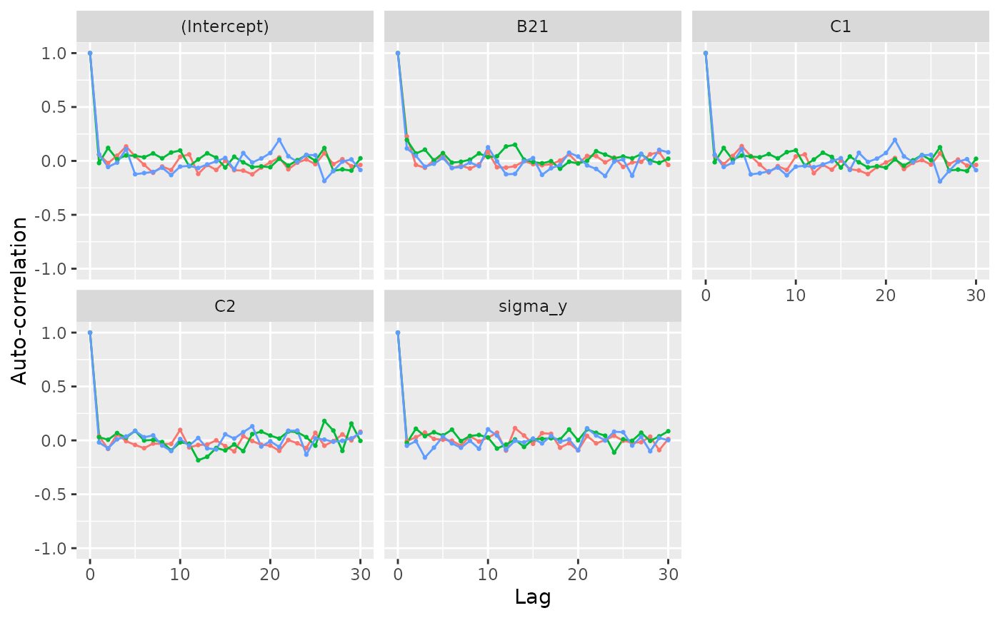

This function obtains the autocorrelation of the MCMC samples in an JointAI
object via coda::autocorr.diag(). autocorr_plot() visualizes the results
using ggplot2.
Usage
autocorr(object, lags = 0:30, by_chain = TRUE, outcome = 1L,
start = NULL, end = NULL, thin = NULL)
autocorr_plot(object, lags = 0:30, by_chain = TRUE, outcome = 1L,
start = NULL, end = NULL, thin = NULL)Arguments
- object
an object of class JointAI
- lags
a numeric vector indicating the lags to consider
- by_chain
logical; should the autocorrelation be computed for each chain separately?
- outcome
integer; index of the outcome model for which the autocorrelation should be plotted
- start
the first iteration of interest (see
window.mcmc)- end
the last iteration of interest (see
window.mcmc)- thin
thinning interval (integer; see
window.mcmc). For example,thin = 1(default) will keep the MCMC samples from all iterations;thin = 5would only keep every 5th iteration.
Value
a matrix or a list of matrix objects if by_chain = TRUE, or
a ggplot() object for autocorr_plot().
Examples
fit <- lm_imp(y ~ C1 + C2 + B2, data = wideDF, n.iter = 200)
autocorr(fit)
#> [[1]]
#> (Intercept) C1 C2 B21 sigma_y
#> Lag 0 1.00000000 1.000000000 1.000000e+00 1.000000000 1.000000000
#> Lag 1 0.05755243 0.050820294 3.756552e-02 0.226834297 -0.006804047
#> Lag 2 -0.02025947 -0.031472084 -7.897606e-02 -0.037219861 0.028898605
#> Lag 3 0.04804338 0.045738380 5.589996e-02 -0.063739573 0.072417278
#> Lag 4 0.13391859 0.137270186 -7.255127e-03 0.005919024 0.013201160
#> Lag 5 0.04303189 0.044911218 -4.206872e-02 0.043508105 0.006212061
#> Lag 6 -0.03546460 -0.033305227 -7.217218e-02 -0.064403392 -0.003317680
#> Lag 7 -0.11019494 -0.106028952 -2.926658e-02 -0.044129385 -0.049512304
#> Lag 8 -0.05202430 -0.048203968 -3.277551e-02 -0.070206398 0.038439710
#> Lag 9 -0.08466595 -0.083732236 -3.269115e-02 -0.033338521 -0.010223730
#> Lag 10 0.03873113 0.041721698 9.698288e-02 0.081953314 0.024691163
#> Lag 11 0.06043596 0.060387399 -6.540813e-02 -0.059040466 0.071502994
#> Lag 12 -0.12034562 -0.113780861 -4.304709e-02 -0.062217045 -0.094471533
#> Lag 13 -0.03713618 -0.036543367 -3.863756e-02 -0.049006428 0.113580588
#> Lag 14 -0.08402861 -0.081613148 5.066313e-04 -0.001572557 0.045040696
#> Lag 15 0.00150724 0.004426657 -5.308215e-02 -0.030047407 -0.032101961
#> Lag 16 -0.08603353 -0.077321989 -1.021146e-01 -0.039753223 0.067147183
#> Lag 17 -0.09004598 -0.088340813 3.930568e-02 -0.030005032 0.060990848
#> Lag 18 -0.12480277 -0.122612278 -5.915694e-03 0.002793837 -0.067920521
#> Lag 19 -0.06109688 -0.057573708 -4.060788e-02 0.060642620 -0.026355059
#> Lag 20 -0.01387767 -0.014552167 -4.792409e-02 -0.024249734 -0.092519525
#> Lag 21 0.03206049 0.026913994 -9.671087e-02 0.045969622 0.041059490
#> Lag 22 -0.07788495 -0.075653586 3.488143e-03 0.044988649 -0.027453810
#> Lag 23 -0.01594933 -0.017807495 -2.679172e-02 -0.013149375 0.002295111
#> Lag 24 0.01337430 0.007584237 -7.128519e-02 0.031047628 0.043560720
#> Lag 25 -0.03027483 -0.034607201 7.031406e-02 -0.055863602 -0.003201316
#> Lag 26 0.07212163 0.069201551 -4.945389e-02 -0.013574070 -0.021524005
#> Lag 27 -0.02946073 -0.030928610 -6.635837e-03 -0.008811811 -0.016754856
#> Lag 28 0.01559392 0.012577269 5.552863e-02 0.061498865 0.034515667
#> Lag 29 -0.04962813 -0.043441962 7.674072e-05 0.081582188 -0.090326106
#> Lag 30 -0.03730159 -0.037237996 8.036176e-02 -0.037304549 0.012539161
#>
#> [[2]]
#> (Intercept) C1 C2 B21 sigma_y
#> Lag 0 1.000000000 1.000000000 1.000000000 1.000000000 1.0000000000
#> Lag 1 -0.019740098 -0.012427058 0.029908697 0.194658863 -0.0227375791
#> Lag 2 0.120446675 0.120355409 0.005894786 0.068727911 0.1080124856
#> Lag 3 0.015484332 0.011077442 0.067756372 0.104583718 0.0391141910
#> Lag 4 0.050779941 0.049558679 0.025635370 0.004425067 0.0757994246
#> Lag 5 0.046971797 0.040778515 0.088464925 0.072673538 0.0461585973
#> Lag 6 0.033889110 0.033782123 -0.001118678 -0.015644120 0.0992883665
#> Lag 7 0.069657496 0.063456016 0.004163519 -0.007789816 -0.0066858580
#> Lag 8 0.023871684 0.023503264 -0.015363696 0.011346772 0.0412523420
#> Lag 9 0.077937604 0.081467060 -0.093501091 0.069663200 0.0502151890
#> Lag 10 0.096610141 0.098926853 -0.018128884 0.035308599 0.0270826554
#> Lag 11 -0.049438086 -0.043739604 -0.030781362 0.043501614 -0.0756562609
#> Lag 12 0.013543088 0.012666030 -0.184421584 0.134024058 -0.0388223542
#> Lag 13 0.070734468 0.076302128 -0.152341651 0.150256079 0.0085753022
#> Lag 14 0.030438410 0.036946811 -0.070972586 0.011843349 -0.0609383839
#> Lag 15 -0.061066182 -0.061536944 -0.092904907 -0.010738658 0.0094905168
#> Lag 16 0.038952291 0.040858942 -0.037258645 -0.021922086 0.0142656290
#> Lag 17 -0.013278761 -0.012817618 -0.099805235 -0.002264757 0.0189245330
#> Lag 18 -0.057440248 -0.059607911 0.058275130 -0.072827651 0.0087218004
#> Lag 19 -0.050456749 -0.049307247 0.081596420 -0.007550529 0.1010834464
#> Lag 20 -0.058525036 -0.062518588 0.044965910 -0.023699934 0.0005149525
#> Lag 21 0.020002549 0.014163732 0.016601316 0.001172543 0.1031723032
#> Lag 22 -0.043579256 -0.044749998 0.083146226 0.090169425 0.0704046269
#> Lag 23 0.006611782 0.005196749 0.076302815 0.058834623 0.0434546826
#> Lag 24 0.054127201 0.054424835 0.029765680 0.025267514 -0.1127090513
#> Lag 25 0.001586515 0.006796942 -0.049072204 0.040707816 0.0105356222
#> Lag 26 0.119628250 0.126573460 0.180196010 0.023770904 -0.0036814032
#> Lag 27 -0.091906843 -0.089342152 0.091027469 0.063048842 0.0714664899
#> Lag 28 -0.078619534 -0.080418165 -0.097399072 0.001558722 -0.0044720652
#> Lag 29 -0.089930859 -0.093515980 0.156171076 -0.017805517 0.0375294418
#> Lag 30 0.024191015 0.019995536 -0.004348521 0.020504248 0.0849211096
#>
#> [[3]]
#> (Intercept) C1 C2 B21 sigma_y
#> Lag 0 1.000000000 1.000000000 1.000000000 1.000000000 1.000000000
#> Lag 1 0.061254841 0.057837132 -0.018666598 0.116164650 -0.049627035
#> Lag 2 -0.056231842 -0.056056556 -0.073815566 0.047997554 -0.006715518
#> Lag 3 -0.015855310 -0.015386718 0.009664979 -0.053985023 -0.159093759
#> Lag 4 0.109451383 0.110139430 0.035799412 -0.026400646 -0.067344787
#> Lag 5 -0.123681285 -0.125211501 0.087787224 0.027382750 0.034552446
#> Lag 6 -0.112610097 -0.114205618 0.029256412 -0.065741126 -0.027669903
#> Lag 7 -0.102518915 -0.096553543 0.046353978 -0.056190421 -0.067884265
#> Lag 8 -0.062662799 -0.061499989 -0.047664559 -0.015162182 -0.003526558
#> Lag 9 -0.131154688 -0.133424942 -0.098793837 -0.048103016 -0.077515914
#> Lag 10 -0.052926385 -0.053095842 0.012814802 0.126554315 0.102645130
#> Lag 11 -0.045841883 -0.045668775 -0.047254390 -0.004212952 0.045371072
#> Lag 12 -0.065826085 -0.058330927 0.022240060 -0.123937624 -0.086051074
#> Lag 13 -0.033080676 -0.033347252 -0.073948896 -0.120303064 -0.003293376
#> Lag 14 -0.004043234 -0.002561476 -0.083568924 -0.003101728 -0.018221753
#> Lag 15 0.027369115 0.024958992 0.056629828 0.025934254 0.017255194
#> Lag 16 -0.077137280 -0.083738157 0.017104458 -0.129389406 -0.027770439
#> Lag 17 0.072785850 0.075355725 0.076242904 -0.067630426 0.040417704
#> Lag 18 -0.014157127 -0.009230301 0.130929099 -0.037571371 -0.011498258
#> Lag 19 0.022338407 0.020788950 -0.056713903 0.076101027 0.008801872
#> Lag 20 0.073026369 0.073534647 -0.008546205 0.040737288 -0.091368130
#> Lag 21 0.195815029 0.195318151 -0.061553732 -0.041475736 0.112088186
#> Lag 22 0.043752046 0.041745514 0.089733633 -0.074527315 0.046467398
#> Lag 23 -0.008627478 -0.009897513 0.090674849 -0.139901114 -0.001404039
#> Lag 24 0.056270440 0.051996140 -0.131969575 -0.006068668 0.080450720
#> Lag 25 0.052522688 0.056646989 0.018875623 0.013062035 0.076051545
#> Lag 26 -0.186726469 -0.190552343 0.007247816 -0.137628238 -0.047863208
#> Lag 27 -0.092789381 -0.093945907 -0.012607898 0.066118231 0.031869286
#> Lag 28 -0.006418210 -0.006833088 -0.003506696 -0.019798683 -0.100755111
#> Lag 29 0.013879174 0.015987949 0.018394497 0.102542372 0.022093499
#> Lag 30 -0.084100267 -0.085696728 0.070975061 0.079915840 0.002033005
#>
autocorr_plot(fit)
